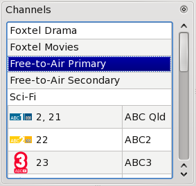
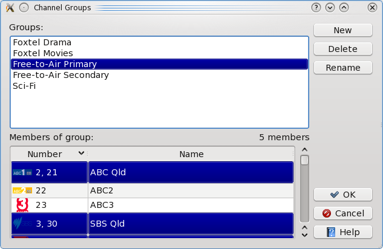

Sometimes the All Channels feature can display too many
channels to easily view. TV Guide can be configured to
remember groups of programmes that contain a subset of the
entire channel list. The groups are then displayed in the
channels pane:

Select Channel Groups from the Tools menu to edit
the list of channel groups:

All Channels is a permanently available group that does
not need to be configured specially.
Return to main index